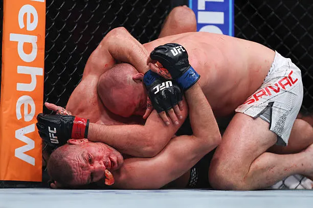

Il mio viaggio nel mondo delle arti marziali è iniziato 9 anni fa, e guardandomi indietro posso dire con certezza che è stata una delle scelte più importanti della mia vita. In tutto questo tempo ho capito una cosa fondamentale: ogni singolo giorno passato sul tatami o sul ring è una vera e propria lezione di vita. Non si tratta solo di imparare a sferrare un pugno o a difendersi, ma di crescere come persona, imparando la disciplina, la costanza e la capacità di rialzarsi dopo una caduta. Per questo motivo mi piacerebbe partecipare a tantissimi tornei diversi: ogni competizione, grande o piccola che sia, è l'occasione perfetta per mettermi alla prova, scoprire i miei limiti e capire quanto valgo davvero. Voglio partire dalle competizioni regionali, che rappresentano il posto giusto dove si impara l'umiltà, il rispetto per l'avversario e dove si capisce cosa significa davvero stare sotto pressione. Sono le sfide che ti forgiano e ti insegnano a mantenere la calma anche quando tutto sembra andare storto. Con il tempo, la costanza e i tanti allenamenti duri, il mio sogno è crescere sempre di più, migliorare giorno dopo giorno e non smettere mai di superare me stesso. So che la strada sarà lunga e piena di ostacoli, ma la passione che ho dentro è più forte di qualsiasi fatica. Ma il mio vero, grande obiettivo è uno solo: arrivare un giorno a combattere nella UFC™. Voglio lavorare sodo ogni singolo giorno per trasformare questo sogno in realtà, perché credo fermamente che con il duro lavoro e la giusta mentalità, nulla sia impossibile.

Il Campionato Nazionale CSEN – circuito Fight1 di Kickboxing, Muay Thai, Grappling e Shootboxe-MMA, che si tiene a Milano al centro Vismara. All'inizio pensavo fosse solo un modo per sfogarsi e mettermi in forma, ma dopo i primi giorni di allenamento ho capito che c'era molto di più: la fatica e il rispetto. Oltre a questo, ci sono molti altri tornei veri che vorrei fare: i Campionati Italiani Assoluti di MMA 2026 con la Federkombat a Jesolo (VE) dal 28 al 31 maggio; il 14° Interregionale Tuscany di combattimento FITA ad Arezzo il 3-4 ottobre 2026; la Coppa Italia FIJLKAM di Grappling 2026 a Pistoia, valida per la selezione della nazionale italiana; e i Campionati Italiani MMA 2026 della Federkombat, con iscrizioni tramite Smoothcomp e quote di 30 euro per categoria. Oltre ai combattimenti, ci sarebbero anche dimostrazioni di kata, incontri con i maestri, stand di attrezzatura e una cerimonia finale con le premiazioni.